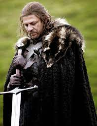
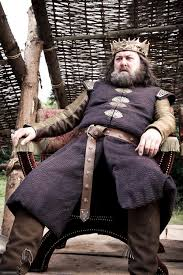
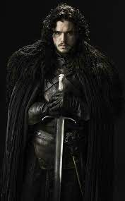
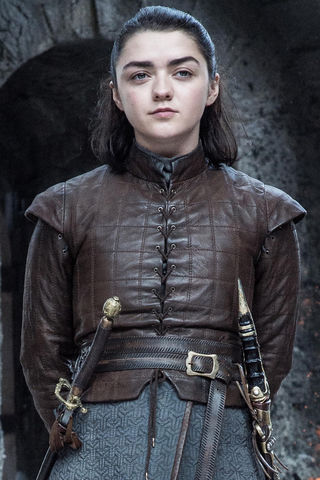

- Casa: Winterfell, norte de Westeros
- Cultura: Homens do norte
- Nome: EDDARD STARK
- Titulo: Mão do Rei, Protetor do Norte
- Total temporadas: 1
- Vivo: false

- Casa: Ponta tempestade
- Cultura: Ândalos
- Nome: ROBERT BARATHEON
- Titulo: Rei dos Ândalos e dos primeiros Homens Senhor dos Sete Reinos Protetor do Reino, Rei dos
Sete
Reinos, Lorde de Ponta Tempestade
- Total temporadas: 1
- Vivo: false
- Casa: Rochedo Casterly, Terras ocidentais de Westeros
- Cultura: Ândalos
- Nome: JAIME LANNISTER
- Titulo: Regicída, Lorde comandante da Guarda Real
- Total temporadas: 8
- Vivo: false
- Casa: "Pedra do Dragão"
- Cultura: "Ândalos"
- Nome: "DAENERYS TARGARYEN"
- Titulo: "Daenerys Nascida da Tormenta,Rainha além do Mar Estreito, Rainha Prateada, Rainha Dragão,
Filha do
Dragão,Mãe dos dragões"
- Total temporadas: 8
- Vivo: false

- Casa: Winterfell, norte de Westeros
- Cultura: Homens do norte
- Nome: JON SNOW
- Titulo: Bastardo Stark, Menbro da guarda da noite, Lorde Comandante da guarda da noite, Protetor do
Norte,
Rei do Norte
- Total temporadas: 8
- Vivo: true

- Casa: Winterfell
- Cultura: Homens do norte
- Nome: ARYA STARK
- Titulo: Princesa de Winterfell, Princesa e Senhora de Ponta Tempestade, Ninguém
- Total temporadas: 8
- Vivo: true